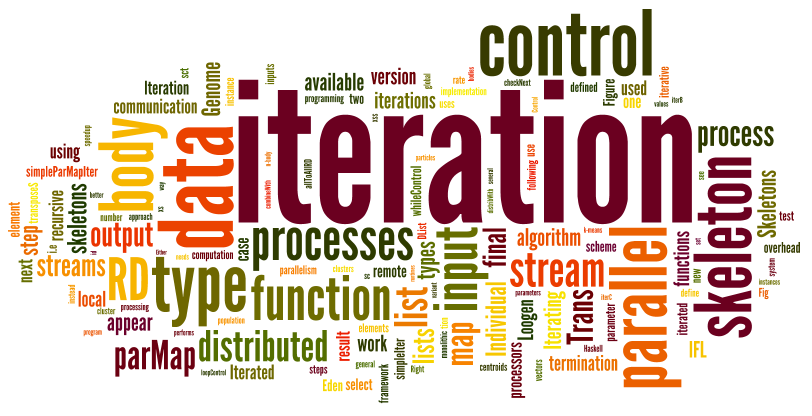

Mischa Dieterle, Thomas Horstmeyer, Jost Berthold, and Rita Loogen
Iterating Skeletons: Structured Parallelism by Composition. In Ralf Hinze and Andy Gill, editors, IFL'12, 24th
Symposium on Implementation and Application of Functional Languages,
Springer LNCS 8241, 2013.
The original publication is available at link.springer.com.
Chris Brown, Hans-Wolfgang Loidl, Jost Berthold, and Kevin Hammond.
Improve your CASH flow: The Computer Algebra SHell. In Jurriaan Hage and Marco Morazan, editors, IFL'10, 22nd
Symposium on Implementation and Application of Functional Languages,
Springer LNCS 6647, pages 169-184, 2011.
The original publication is available at www.springerlink.com.
Jost Berthold.
Orthogonal Serialisation for Haskell. In Jurriaan Hage and Marco Morazan, editors, IFL'10, 22nd
Symposium on Implementation and Application of Functional Languages,
Springer LNCS 6647, pages 38-53, 2011.
The original publication is available at www.springerlink.com.
Mischa Dieterle, Jost Berthold, and Rita Loogen.
A Skeleton for Distributed Work Pools in Eden.
In Matthias Blume, Naoki Kobayashi, and Germán Vidal, editors,
FLOPS'10, 10th Fuji International Symposium on Functional and Logic
Programming.,
Springer LNCS 6009, pages 337-353, 2010.
The original publication is available at www.springerlink.com.
Jost Berthold, Mischa Dieterle, and Rita Loogen.
Implementing Parallel Google Map-Reduce in Eden. In H. Sips, D. Epema, and H.X. Lin, editors, Euro-Par 2009,
Parallel Processing,
Springer LNCS 5704, pages 990-1002, 2009.
The original publication is available at
www.springerlink.com.
Mustafa Aswad, Phil Trinder, A. D. Al Zain, Greg Michaelson, and Jost
Berthold.
Low Pain vs. No Pain Multicore Haskells. In Zoltán Horváth, Viktória Zsók, Peter Achten, and Pieter
Koopman, editors, Trends in Functional Programming, 10th International
Symposium, Komárno, Slovakia, 2009, Revised Selected Papers (TFP'09),
Exeter: Intellect, pages 49-64, 2010.
A. D. Al Zain, Kevin Hammond, Jost Berthold, Phil Trinder, Greg Michaelson,
and Mustafa Aswad.
Low-pain, high-gain multicore programming in Haskell: coordinating
irregular symbolic computations on multicore architectures.
In DAMP '09: Proceedings of the 4th workshop on Declarative
aspects of multicore programming,
pages 25-36, New York: ACM, 2009.
Jost Berthold, Mischa Dieterle, Rita Loogen, and Steffen Priebe.
Hierarchical Master-Worker Skeletons. In Paul Hudak and David Warren, editors, PADL'08 -- Practical
Aspects of Declarative Languages,
Springer LNCS 4902, pages 133-152, 2008.
(Springer)
Jost Berthold, Hans-Wolfgang Loidl, and A.D. Al Zain.
Scheduling Light-Weight Parallelism in ARTCOP. In Paul Hudak and David Warren, editors, PADL'08 -- Practical
Aspects of Declarative Languages,
Springer LNCS 4902, pages 214-229, 2008.
(Springer)
Jost Berthold and Rita Loogen.
Skeletons for recursively unfolding process topologies. In Gerhard R. Joubert, Wolfgang E. Nagel, Frans J. Peters, Oscar G.
Plata, P. Tirado, and Emilio L. Zapata, editors, Parallel Computing:
Current & Future Issues of High-End Computing, Proceedings of the
International Conference ParCo 2005, 13-16 September 2005, Department of
Computer Architecture, University of Malaga, Spain, volume 33 of John
von Neumann Institute for Computing Series. Central Institute for Applied
Mathematics, Jülich, Germany, 2005.
Jost Berthold and Rita Loogen.
The impact of dynamic channels on functional topology skeletons. In Alexander Tiskin and Frederic Loulergue, editors, HLPP 2005
-- 3rd International Workshop on High-level Parallel Programming and
Applications, Coventry, UK, 2005.
Proceedings.
Jost Berthold.
Towards a generalised runtime environment for parallel haskells. In Marian Bubak et al., editor, Computational Science --
ICCS'04, number 3 in LNCS 3038, Krakow, Poland, 2004. Springer.
(Workshop on Practical Aspects of High-level Parallel Programming
-- PAPP04).
Jost Berthold.
Dynamic Chunking in Eden. In Phil Trinder, Greg Michaelson, and Ricardo Peña, editors, 15th Intl. Workshop on the Implementation of Functional Languages (IFL
2003), LNCS 3145, Edinburgh, UK, 2003.
Jost Berthold, Ulrike Klusik, Rita Loogen, Steffen Priebe, and Nils Weskamp.
High-level Process Control in Eden. In Harald Kosch, László Böszörményi, and Herrmann
Hellwagner, editors, EuroPar 2003 - Parallel Processing, LNCS 2790,
Klagenfurt, Austria, 2003.
Kevin Hammond, Jost Berthold, and Rita Loogen.
Automatic Skeletons in Template Haskell. Parallel Processing Letters (World Scientific Publishing
Company), 13(3):413-424, 2003.
Kevin Hammond, Jost Berthold, and Rita Loogen.
Automatic Skeletons in Template Haskell.
In F. Loulergue, editor, HLPP 2003 -- 2nd International
Workshop on High-level Parallel Programming and Applications, Paris,
France, 2003.
Jost Berthold, Rita Loogen, Steffen Priebe, and Nils Weskamp.
Porting the Eden System to GHC 5.00.2.
In 14th Intl. Workshop on the Implementation of Functional
Languages (IFL 2002). Univ. Complutense de Madrid, Sept. 2002.
Workshop version only, not submitted.